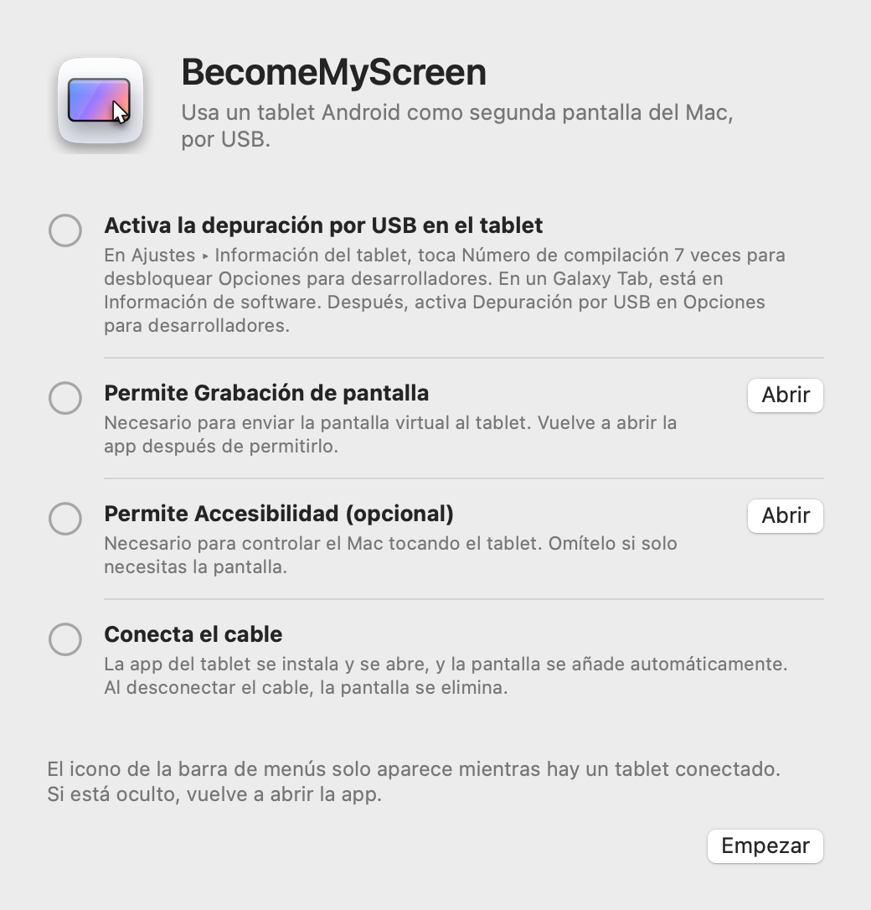
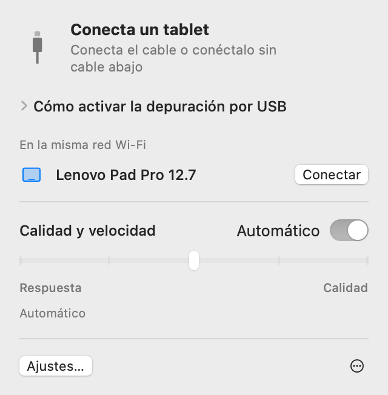
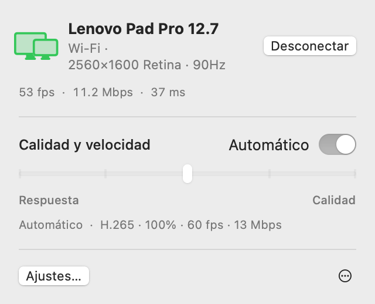
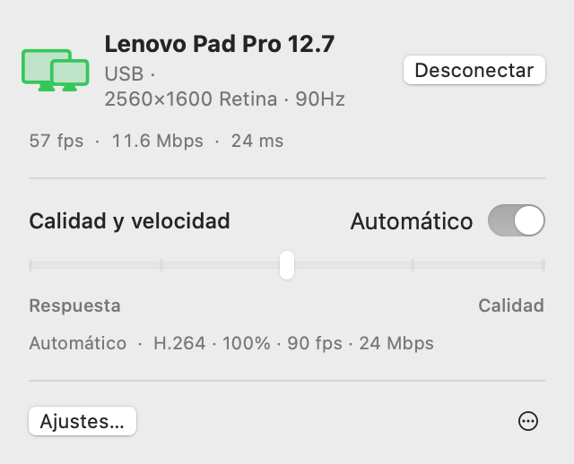
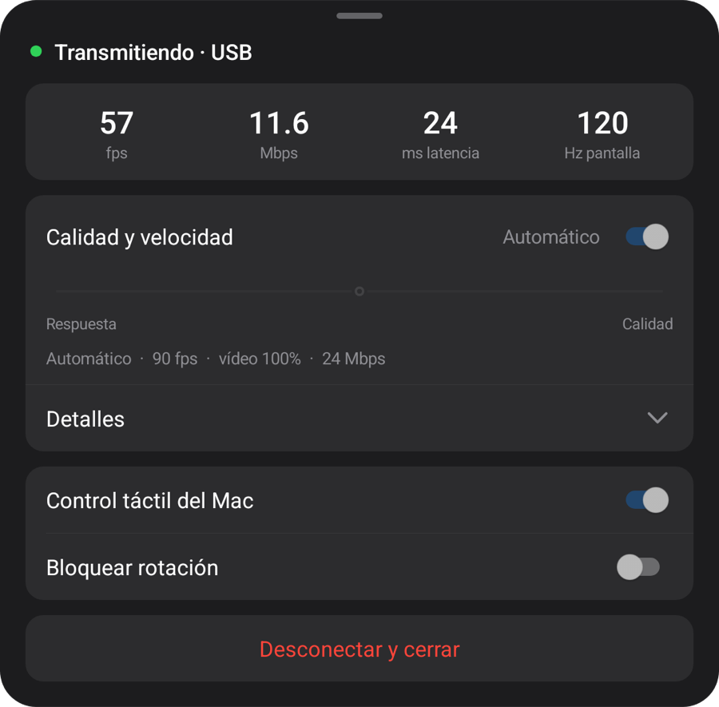
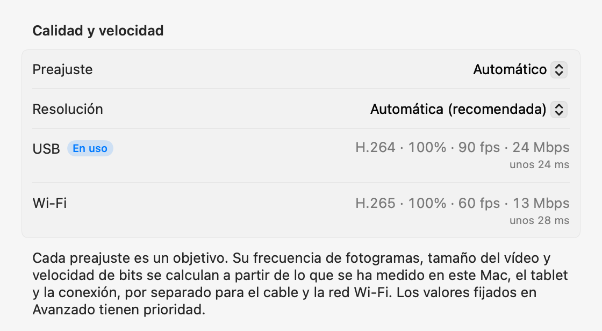

macOS + Vista previa de Windows
Tu tableta.
La pantalla de tu ordenador.
Una pantalla adicional para Mac. Una versión preliminar de duplicación para Windows. Conecta tu tableta Android por USB; el ordenador instala y abre la app de la tableta.
Abre el zip, mueve la app a la carpeta Aplicaciones y ábrela. Para la primera conexión, consulta Configuración.
Abre esta página en tu ordenador para descargar la app para Mac o Windows.

1.0.1 Preview 1
Vista previa de Windows
Ahora en Windows 11. Apps nativas para Intel/AMD x64 y ARM64 en una sola descarga.

Extrae todo el ZIP y ejecuta Start-Mirroring.cmd. En una máquina virtual, usa Start-Mirroring-VM.cmd. Activa la depuración USB y autoriza la conexión en la tableta. El motor de vídeo se descarga automáticamente al iniciar por primera vez; requiere Internet.
La configuración, las funciones y las mediciones siguientes corresponden a Mac. Para Windows, consulta la guía preliminar de arriba.
Configuración
Solo tienes que configurarlo una vez. Después, al conectar el cable se añade la pantalla y, en la misma red Wi‑Fi, se conecta sin cable.
-
Instala la app del Mac
Abre el zip descargado, mueve BecomeMyScreen a la carpeta Aplicaciones y ábrela. Permite Grabación de pantalla y vuelve a abrir la app.
-
Activa la depuración por USB en el tablet
En Ajustes › Información del tablet, toca Número de compilación siete veces para desbloquear Opciones para desarrolladores. En un Galaxy Tab, está en Información de software. Después, activa Depuración por USB en Opciones para desarrolladores.
-
Conecta el cable
Cuando el tablet pregunte si quieres permitir la depuración por USB, marca “Permitir siempre desde este ordenador” y toca Permitir. El Mac instala y abre la app del tablet y, después, añade la pantalla. No hay que descargar ninguna app aparte para el tablet.

Velocidad
El tiempo que pasa desde que el Mac captura la pantalla hasta que el tablet la dibuja. Medido con un Lenovo Pad Pro 12.7 y un Mac con M4 Pro.
| Tamaño del vídeo | 60 fps | 120 fps |
|---|---|---|
| 100%2560×1600 | 20 ms | 24 ms |
| 75%1920×1200 | 14 ms | 19 ms |
| 50%1280×800 | 11 ms | 16 ms |
El codificador por hardware del chip de Apple comprime la pantalla en H.264 y la envía por USB, y el decodificador por hardware del tablet dibuja cada fotograma en cuanto llega. En la primera conexión, Automático mide cuánto puede procesar el decodificador y elige la frecuencia de fotogramas más alta que no se quede atrás. En este tablet ha elegido 90 fps.
Cómo se ha medido: tras corregir la diferencia entre los relojes de los dos dispositivos, medimos el tiempo entre que el Mac captura un fotograma y que el tablet dibuja ese mismo fotograma.
Conexión inalámbrica
Un tablet que se haya conectado una vez por USB también funciona sin cable en la misma red Wi‑Fi. Desconecta el cable mientras trabajas y la pantalla continúa por Wi‑Fi.
- Conexión
- Abre la app en el tablet y aparecerá en la lista “En la misma red Wi‑Fi” de la barra de menús del Mac. Haz clic en Conectar y aparecerá la pantalla.
- Desconexión del cable
- Cambia a Wi‑Fi en menos de un segundo. La pantalla virtual y la disposición de tus ventanas se mantienen, y al volver a conectar el cable vuelve a USB.
- Seguridad
- La clave de las conexiones inalámbricas solo se intercambia a través del cable USB. La conexión solo se establece después de verificar la clave, y la pantalla y la entrada se cifran por completo con AES-256-GCM.
- Ritmo adaptativo
- El tablet confirma cada fotograma que recibe, y el Mac se salta tantos fotogramas como lleve de retraso y ajusta la velocidad de bits. Aunque la red Wi‑Fi vaya lenta un momento, el retardo no se acumula.


| Conexión | Latencia | Notas |
|---|---|---|
| USB | Unos 20–25 ms | La frecuencia de fotogramas máxima del tablet |
| Wi‑Fi 5 GHz | 40–55 ms | 60 fps; la velocidad de bits sube automáticamente hasta el ajuste de calidad |
| Wi‑Fi 2.4 GHz | 40–65 ms | La latencia a veces supera los 100 ms, lo que puede notarse como tirones |
Medido con un Lenovo Pad Pro 12.7 a 2560×1600 con contenido que cambia constantemente. Si el tablet está en una red Wi‑Fi de 2,4 GHz, la app sugiere cambiar a 5 GHz.
Calidad y respuesta
Elige uno de los cinco niveles o déjalo en Automático. Cámbialo desde la barra de menús del Mac o desde el menú del tablet, y los dos cambian a la vez.
| Preajuste | Frecuencia de fotogramas | Tamaño del vídeo | Velocidad de bits |
|---|---|---|---|
| Automático | 90 fps | 100% | 24 Mbps |
| 1Respuesta más rápida | 120 fps | 50% | 8 Mbps |
| 2Respuesta rápida | 120 fps | 75% | 14 Mbps |
| 3Equilibrado | 90 fps | 100% | 24 Mbps |
| 4Alta calidad | 90 fps | 100% | 33 Mbps |
| 5Máxima calidad | 60 fps | 100% | 39 Mbps |
Medido con un Lenovo Pad Pro 12.7 (2560×1600, 120 Hz) conectado por USB a un Mac con M4 Pro. Cada preajuste es un objetivo: en otro Mac u otro tablet, y por Wi‑Fi, calcula sus propios valores a partir de lo que se ha medido. Automático equivale a Equilibrado.
El tamaño del vídeo se ajusta por separado de la resolución que ve el Mac. Un vídeo más pequeño sigue ocupando toda la pantalla del tablet, y aligera la carga del decodificador y reduce la latencia en la misma medida.
En la primera conexión, la app mide el cable, el codificador de vídeo de este Mac y el decodificador del tablet en cada uno de sus modos, en unos 10 segundos; la primera vez que se conecta por Wi‑Fi, mide la red. Cada preajuste se adapta a estas cifras, por separado para el cable y la red Wi‑Fi, y en la pestaña Avanzado de Ajustes puedes fijar cualquier valor para cada conexión. Si el cable es lento, la app te avisa para que lo cambies.



Control táctil
Toca el tablet y el Mac lo recibe como entrada de ratón. Se activa en cuanto permites Accesibilidad en el Mac.
| En el tablet | En el Mac |
|---|---|
| Tocar | Clic |
| Arrastrar | Arrastrar |
| Arrastrar con dos dedos | Desplazarse |
| Tocar con dos dedos | Clic secundario |
| Tocar con tres dedos | Abre el menú del tablet |
| Dibujar con un lápiz | Llega al Mac como entrada de tableta gráfica, con presión e inclinación |
| Pasar un lápiz o el ratón sobre la pantalla | Mueve el puntero. Toca mientras mantienes pulsado el botón del lápiz para hacer clic secundario |
Un puntero que vuelve a donde estaba
Cuando tocas el tablet, el puntero del Mac se mueve a ese punto. Si después mueves un poco el ratón, el puntero vuelve a donde estaba antes del toque, así que no tienes que arrastrarlo de vuelta a lo que estabas haciendo en la pantalla principal. Puedes desactivarlo en Ajustes.
Detalles
- Icono de la barra de menús
-
Solo se muestra mientras hay un tablet conectado. Si está oculto, vuelve a abrir la app y aparecerá un momento con su panel abierto.
- En espera
- Preparando
- En uso
- Requiere atención
- Apertura de la app del tablet
- Si la app del tablet no está abierta al conectar el cable, el Mac la abre y activa la pantalla si está apagada. Nunca omite la pantalla de bloqueo.
- Actualizaciones
- La app para Mac busca nuevas versiones y se actualiza cuando tú lo decides. Si incluye una app del tablet más reciente, el tablet se actualiza por cable antes de que empiece la pantalla.
- Vertical
- Gira el tablet a vertical y la pantalla virtual también se vuelve a crear en vertical.
- Frecuencia de actualización y apagado de pantalla
- Durante la transmisión, la frecuencia de actualización del tablet se mantiene para que no baje a 60 Hz, y la pantalla no se apaga.
- Comprobación del cable
- Si el USB se conecta a menos de 480 Mbps, las transferencias no pasan de 8 MB/s o la conexión se corta tres veces en tres minutos, la app sugiere probar otro cable u otro puerto.
- Cuando se corta la conexión
- Si se desconecta el cable, la pantalla continúa por Wi‑Fi. Si no puede continuar sin cable, la pantalla virtual se mantiene un rato y, si el tablet se vuelve a conectar en ese tiempo, la disposición de tus ventanas sigue como estaba.
- Desconectar y Reconectar
- Haz clic en Desconectar en la barra de menús y la pantalla del tablet queda en pausa, aunque el cable siga conectado. Haz clic en Reconectar para continuar.
- La app del tablet se cierra sola
- Cuando no hay nada conectado al tablet, ni siquiera un cargador, la app del tablet se cierra sola a los 10 segundos. Si puede esperar una conexión inalámbrica, espera 2 minutos.
Requisitos
- Mac
- Mac con chip de Apple y macOS 14 o posterior
- Windows
- Windows 11 · Intel / AMD x64 · ARM64 · Vista previa de Windows
- Tablet
- Android 8.0 o posterior, en un dispositivo en el que se pueda activar la depuración por USB
- Cable
- Un cable USB que admita transferencia de datos. Los cables solo de carga no se conectan. Un puerto del propio Mac es más fiable que un hub.
- Conexión inalámbrica
- El Mac y el tablet tienen que estar en la misma red Wi‑Fi; se recomienda 5 GHz. La primera conexión tiene que ser por USB.
- Permisos del Mac
- Grabación de pantalla. Además, Accesibilidad para controlar el Mac de forma táctil y Red local para usarlo sin cable.
Preguntas frecuentes
Vista previa de Windows
Esta versión duplica la pantalla existente. Windows bloqueó la instalación del controlador en nuestro entorno ARM64; usa el ZIP si te ocurre. La pantalla extendida en equipos x64 físicos aún no se ha verificado. Novedades y limitaciones conocidas
¿Tengo que instalar una app en el tablet?
No. La app del tablet viene dentro de la app del Mac, así que cuando conectas el cable, el Mac la instala y la abre. Cuando actualizas la app del Mac, la app del tablet se actualiza con ella en la siguiente conexión.
¿Funciona por Wi‑Fi?
Sí. Después de conectarlo una vez por USB, a partir de entonces se conecta sin cable en la misma red Wi‑Fi. Abre la app en el tablet y haz clic en Conectar en la barra de menús del Mac, o simplemente desconecta el cable mientras lo usas. La latencia es un poco mayor que por USB (40–55 ms en 5 GHz), y la Wi‑Fi de 2,4 GHz puede dar tirones de vez en cuando, así que se recomienda 5 GHz.
¿Por qué la primera conexión tiene que ser por USB?
Porque la clave de las conexiones inalámbricas solo se intercambia a través del cable. Así, ningún otro dispositivo de la misma red Wi‑Fi puede hacerse pasar por tu tablet y conectarse a tu Mac. En ese momento también se instala la app del tablet.
¿Funciona la presión del lápiz?
Sí. La presión y la inclinación del lápiz llegan a macOS como entrada de tableta gráfica (presión, inclinación y proximidad). Usa la entrada de lápiz estándar de Android, así que el S Pen y los lápices de Lenovo no necesitan ningún SDK ni controlador adicional. Probado con el lápiz del Lenovo Pad Pro 12.7.
¿Con qué tablets funciona?
Con cualquier tablet con Android 8.0 o posterior en el que se pueda activar la depuración por USB. El desarrollo y las mediciones se han hecho con un Lenovo Pad Pro 12.7 (2944×1840, 120 Hz); otros dispositivos aún no se han probado directamente. La resolución y la orientación de la pantalla virtual se adaptan a la pantalla del tablet al conectarse.
¿Por qué no está en el App Store?
Para crear la pantalla virtual se usa una función privada de macOS, por lo que no se puede publicar en el App Store. En su lugar, la app está firmada con un certificado de desarrollador de Apple y notarizada por Apple, así que se abre nada más descargarla.
¿Por qué necesita Grabación de pantalla y Accesibilidad?
Grabación de pantalla captura la pantalla virtual para enviarla al tablet, Accesibilidad convierte los toques y el lápiz del tablet en entrada del Mac, y Red local encuentra tablets en la misma red Wi‑Fi. La pantalla solo viaja por el cable USB o dentro de tu red Wi‑Fi (cifrada en la conexión inalámbrica) y nunca sale a internet.
La conexión se corta continuamente.
Prueba otro cable que admita transferencia de datos o conéctalo directamente a un puerto del Mac en lugar de a un hub. La app te avisa antes cuando el USB se conecta despacio o se corta a menudo. Tras un corte breve, la pantalla virtual se mantiene 15 segundos y continúa donde se quedó.
¿Y si el tablet está bloqueado?
El Mac activa la pantalla y abre la app, pero nunca omite el bloqueo. Desbloquéalo con tu PIN o patrón y se conectará al momento.
¿Funciona en los Mac con Intel?
La versión actual es solo para Mac con chip de Apple.
Descargar
Abre esta página en tu ordenador para descargar la app para Mac o Windows.
Abre el zip, mueve la app a la carpeta Aplicaciones y ábrela. Para la primera conexión, consulta Configuración.